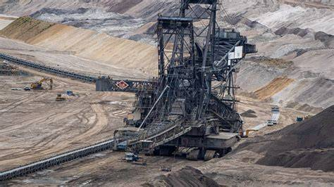
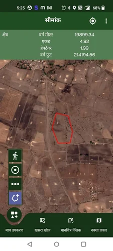

Total Station Survey Services
English
Total Station surveys combine electronic distance measurement with angle measurements for precise land surveying. Ideal for topography, construction, and infrastructure projects.
- Topographic mapping
- Distance and angle measurements
- 3D modeling
- Digital data output
हिंदी
टोटल स्टेशन सर्वेक्षण इलेक्ट्रॉनिक दूरी माप के साथ कोण माप को जोड़ते हैं, जो सटीक भूमि सर्वेक्षण के लिए हैं। स्थलाकृति, निर्माण और बुनियादी ढांचा परियोजनाओं के लिए आदर्श।
- स्थलाकृति मैपिंग
- दूरी और कोण माप
- 3डी मॉडलिंग
- डिजिटल डेटा आउटपुट
Our Work

